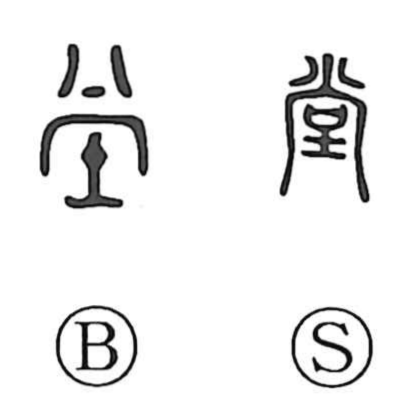

堂

Uncategorized
Kun: | On: do
hall ・ temple hall
Explanation
堂 is a phono-semantic character built on 尚 as its sound element, as seen also in 棠 and 党. In the early graphs, 尚 evoked the faint signs of the divine appearing at a window—an opening where deities are welcomed and worshiped—while the lower element depicts a clay stand or dais. Together they portray a structure raised on an earthen platform to receive the gods: a lofty pavilion, the high hall. Originally it named a shrine-like building, the grand殿堂 used for venerating deities or Buddhas, and in later usage it broadened to mean a building or reception hall, including the main audience hall (正殿).